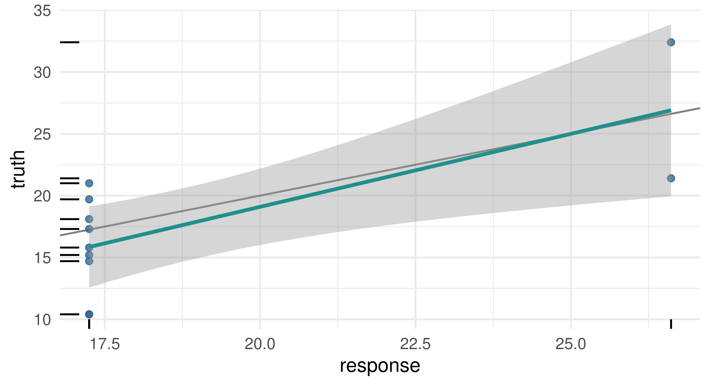
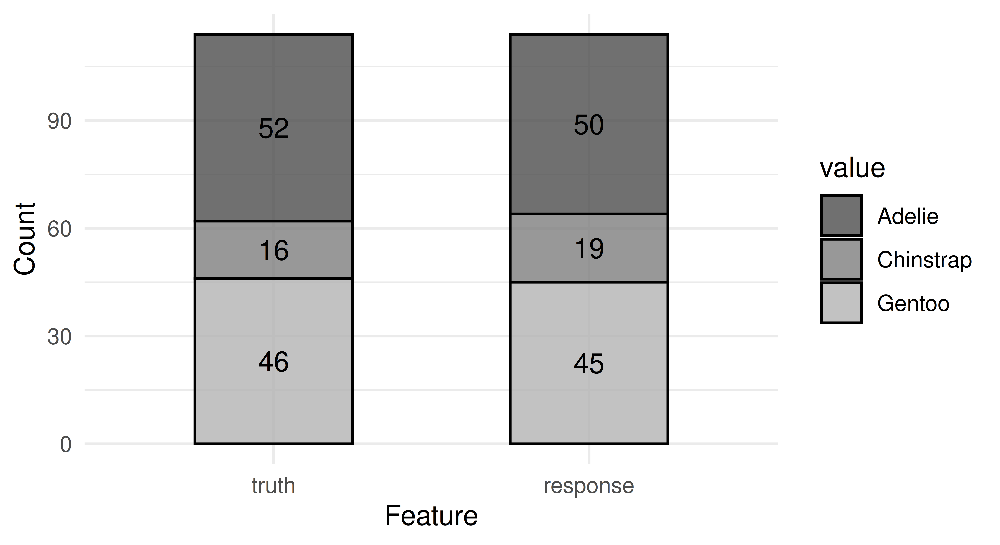
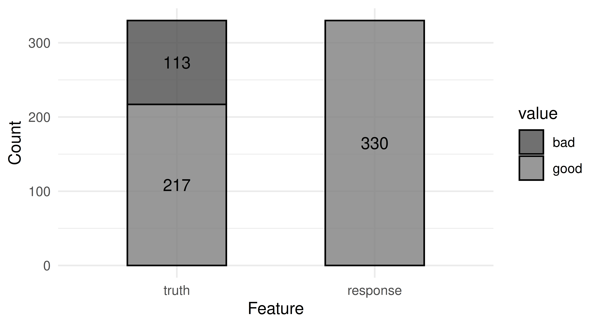
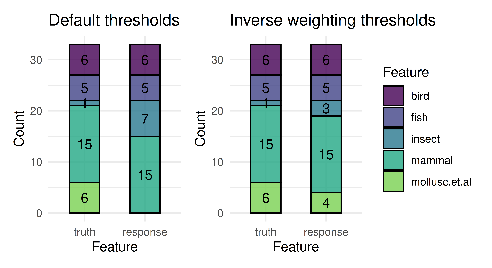

2 Data and Basic Modeling
Natalie Foss
University of Wyoming
Lars Kotthoff
University of Wyoming
In this chapter, we will introduce the mlr3 objects and corresponding R6 classes that implement the essential building blocks of machine learning. These building blocks include the data (and the methods for creating training and test sets), the machine learning algorithm (and its training and prediction process), the configuration of a machine learning algorithm through its hyperparameters, and evaluation measures to assess the quality of predictions.
In the simplest definition, machine learning (ML) is the process of learning models of relationships from data. Supervised learning is a subfield of ML in which datasets consist of labeled observations, which means that each data point consists of features, which are variables to make predictions from, and a target, which is the quantity that we are trying to predict. For example, predicting a car’s miles per gallon (target) based on the car’s properties (features) such as horsepower and the number of gears is a supervised learning problem, which we will return to several times in this book. In mlr3, we refer to datasets, and their associated metadata as tasks (Section 2.1). The term ‘task’ is used to refer to the prediction problem that we are trying to solve. Tasks are defined by the features used for prediction and the targets to predict, so there can be multiple tasks associated with any given dataset. For example, predicting miles per gallon (mpg) from horsepower is one task, predicting horsepower from mpg is another task, and predicting the number of gears from the car’s model is yet another task.
Machine Learning/Supervised Learning
Supervised learning can be further divided into regression – which is the prediction of numeric target values, e.g. predicting a car’s mpg – and classification – which is the prediction of categorical values/labels, e.g., predicting a car’s model. Chapter 13 also discusses other tasks, including cost-sensitive classification and unsupervised learning. For any supervised learning task, the goal is to build a model that captures the relationship between the features and target, often with the goal of training the model to learn relationships about the data so it can make predictions for new and previously unseen data. A model is formally a mapping from a feature vector to a prediction. A prediction can take many forms depending on the task; for example, in classification this can be a predicted label, or a set of predicted probabilities or scores. Models are induced by passing training data to machine learning algorithms, such as decision trees, support vector machines, neural networks, and many more. Machine learning algorithms are called learners in mlr3 (Section 2.2) as, given data, they learn models. Each learner has a parameterized space that potential models are drawn from and during the training process, these parameters are fitted to best match the data. For example, the parameters could be the coefficients used for individual features when training a linear regression model. During training, most machine learning algorithms are ‘fitted’/‘trained’ by optimizing a loss-function that quantifies the mismatch between ground truth target values in the training data and the predictions of the model.
RegressionClassificationModelLearners
For a model to be most useful, it should generalize beyond the training data to make ‘good’ predictions (Section 2.2.2) on new and previously ‘unseen’ (by the model) data. The simplest way to test this, is to split data into training data and test data – where the model is trained on the training data and then the separate test data is used to evaluate models in an unbiased way by assessing to what extent the model has learned the true relationships that underlie the data (Chapter 3). This evaluation procedure estimates a model’s generalization error, i.e., how well we expect the model to perform in general. There are many ways to evaluate models and to split data for estimating generalization error (Section 3.2).
Train/Test DataGeneralization Error
This brief overview of ML provides the basic knowledge required to use mlr3 and is summarized in Figure 2.1. In the rest of this book, we will provide introductions to methodology when relevant. For texts about ML, including detailed methodology and underpinnings of different algorithms, we recommend Hastie, Friedman, and Tibshirani (2001), James et al. (2014), and Bishop (2006).
In the next few sections we will look at the building blocks of mlr3 using regression as an example, we will then consider how to extend this to classification in Section 2.5.
2.1 Tasks
Tasks are objects that contain the (usually tabular) data and additional metadata that define a machine learning problem. The metadata contain, for example, the name of the target feature for supervised machine learning problems. This information is extracted automatically when required, so the user does not have to specify the prediction target every time a model is trained.
2.1.1 Constructing Tasks
mlr3 includes a few predefined machine learning tasks in the mlr_tasks Dictionary.
mlr_tasksmlr_tasks<DictionaryTask> with 23 stored values
Keys: ames_housing, bike_sharing, boston_housing, breast_cancer,
california_housing, german_credit, ilpd, iris, kc_housing,
moneyball, mtcars, optdigits, pbc, penguins, penguins_simple,
pima, ruspini, sonar, spam, titanic, usarrests, wine, zooTo get a task from the dictionary, use the tsk() function and assign the return value to a new variable. Below we retrieve tsk("mtcars"), which uses the mtcars dataset:
tsk_mtcars = tsk("mtcars")
tsk_mtcars
── <TaskRegr> (32x11): Motor Trends ─────────────────────────────────────
• Target: mpg
• Properties: -
• Features (10):
• dbl (10): am, carb, cyl, disp, drat, gear, hp, qsec, vs, wtRunning tsk() without any arguments will list all the tasks in the dictionary, this also works for all other sugar constructors that you will encounter throughout the book.
Help Pages
Usually in R, the help pages of functions can be queried with ?. The same is true of R6 classes, so if you want to find the help page of the mtcars task you could use ?mlr_tasks_mtcars. We have also added a $help() method to many of our classes, which allows you to access the help page from any instance of that class, for example: tsk("mtcars")$help().
To create your own regression task, you will need to construct a new instance of TaskRegr. The simplest way to do this is with the function as_task_regr() to convert a data.frame type object to a regression task, specifying the target feature by passing this to the target argument. By example, we will ignore that mtcars is already available as a predefined task in mlr3. In the code below we load the datasets::mtcars dataset, subset the data to only include columns "mpg", "cyl", "disp", print the modified data’s properties, and then set up a regression task called "cars" (id = "cars") in which we will try to predict miles per gallon (target = "mpg") from the number of cylinders ("cyl") and displacement ("disp"):
TaskRegras_task_regr()data("mtcars", package = "datasets")
mtcars_subset = subset(mtcars, select = c("mpg", "cyl", "disp"))
str(mtcars_subset)'data.frame': 32 obs. of 3 variables:
$ mpg : num 21 21 22.8 21.4 18.7 18.1 14.3 24.4 22.8 19.2 ...
$ cyl : num 6 6 4 6 8 6 8 4 4 6 ...
$ disp: num 160 160 108 258 360 ...tsk_mtcars = as_task_regr(mtcars_subset, target = "mpg", id = "cars")The data can be in any tabular format, e.g. a data.frame(), data.table(), or tibble(). The target argument specifies the prediction target column. The id argument is optional and specifies an identifier for the task that is used in plots and summaries; if omitted the variable name of the data will be used as the id.
UTF8 Column Names
As many machine learning models do not work properly with arbitrary UTF8 names, mlr3 defaults to throwing an error if any of the column names passed to as_task_regr() (and other task constructors) contain a non-ASCII character or do not comply with R’s variable naming scheme. Therefore, we recommend converting names with make.names() if possible. You can bypass this check by setting options(mlr3.allow_utf8_names = TRUE) (but do not be surprised if errors occur later, especially when passing objects to other packages).
Printing a task provides a summary and in this case, we can see the task has 32 observations and 3 columns (32 x 3), of which mpg is the target, there are no special properties (Properties: -), and there are 2 features stored in double-precision floating point format.
tsk_mtcars
── <TaskRegr> (32x3) ────────────────────────────────────────────────────
• Target: mpg
• Properties: -
• Features (2):
• dbl (2): cyl, dispWe can plot the task using the mlr3viz package, which gives a graphical summary of the distribution of the target and feature values:
2.1.2 Retrieving Data
We have looked at how to create tasks to store data and metadata, now we will look at how to retrieve the stored data.
Various fields can be used to retrieve metadata about a task. The dimensions, for example, can be retrieved using $nrow and $ncol:
c(tsk_mtcars$nrow, tsk_mtcars$ncol)[1] 32 3The names of the feature and target columns are stored in the $feature_names and $target_names slots, respectively.
c(Features = tsk_mtcars$feature_names,
Target = tsk_mtcars$target_names)Features1 Features2 Target
"cyl" "disp" "mpg" The columns of a task have unique character-valued names and the rows are identified by unique natural numbers, called row IDs. They can be accessed through the $row_ids field:
head(tsk_mtcars$row_ids)[1] 1 2 3 4 5 6Row IDs are not used as features when training or predicting but are metadata that allow access to individual observations. Note that row IDs are not the same as row numbers. This is best demonstrated by example, below we create a regression task from random data, print the original row IDs, which correspond to row numbers 1-5, then we filter three rows (we will return to this method just below) and print the new row IDs, which no longer correspond to the row numbers.
task = as_task_regr(data.frame(x = runif(5), y = runif(5)),
target = "y")
task$row_ids[1] 1 2 3 4 5task$filter(c(4, 1, 3))
task$row_ids[1] 4 1 3This design decision allows tasks and learners to transparently operate on real database management systems, where primary keys are required to be unique, but not necessarily consecutive. See Section 10.4 for more information on using databases as data backends for tasks
The data contained in a task can be accessed through $data(), which returns a data.table object. This method has optional rows and cols arguments to specify subsets of the data to retrieve.
# retrieve all data
tsk_mtcars$data() mpg cyl disp
1: 21.0 6 160.0
2: 21.0 6 160.0
3: 22.8 4 108.0
4: 21.4 6 258.0
5: 18.7 8 360.0
---
28: 30.4 4 95.1
29: 15.8 8 351.0
30: 19.7 6 145.0
31: 15.0 8 301.0
32: 21.4 4 121.0# retrieve data for rows with IDs 1, 5, and 10 and all feature columns
tsk_mtcars$data(rows = c(1, 5, 10), cols = tsk_mtcars$feature_names) cyl disp
1: 6 160.0
2: 8 360.0
3: 6 167.6
Accessing Rows by Number
You can work with row numbers instead of row IDs by using the $row_ids field to extract the row ID corresponding to a given row number:
# select the 2nd row of the task by extracting the second row_id:
tsk_mtcars$data(rows = task$row_ids[2])You can always use ‘standard’ R methods to extract summary data from a task, for example, to summarize the underlying data:
summary(as.data.table(tsk_mtcars)) mpg cyl disp
Min. :10.4 Min. :4.00 Min. : 71.1
1st Qu.:15.4 1st Qu.:4.00 1st Qu.:120.8
Median :19.2 Median :6.00 Median :196.3
Mean :20.1 Mean :6.19 Mean :230.7
3rd Qu.:22.8 3rd Qu.:8.00 3rd Qu.:326.0
Max. :33.9 Max. :8.00 Max. :472.0 2.1.3 Task Mutators
After a task has been created, you may want to perform operations on the task such as filtering down to subsets of rows and columns, which is often useful for manually creating train and test splits or to fit models on a subset of given features. Above we saw how to access subsets of the underlying dataset using $data(), however, this will not change the underlying task. Therefore, we provide mutators, which modify the given Task in place, which can be seen in the examples below.
Mutators
Subsetting by features (columns) is possible with $select() with the desired feature names passed as a character vector and subsetting by observations (rows) is performed with $filter() by passing the row IDs as a numeric vector.
tsk_mtcars_small = tsk("mtcars") # initialize with the full task
tsk_mtcars_small$select("cyl") # keep only one feature
tsk_mtcars_small$filter(2:3) # keep only these rows
tsk_mtcars_small$data() mpg cyl
1: 21.0 6
2: 22.8 4As R6 uses reference semantics (Section 1.5.1), you need to use $clone() if you want to modify a task while keeping the original object intact.
# the wrong way
tsk_mtcars = tsk("mtcars")
tsk_mtcars_wrong = tsk_mtcars
tsk_mtcars_wrong$filter(1:2)
# original data affected
tsk_mtcars$head() mpg am carb cyl disp drat gear hp qsec vs wt
1: 21 1 4 6 160 3.9 4 110 16.46 0 2.620
2: 21 1 4 6 160 3.9 4 110 17.02 0 2.875# the right way
tsk_mtcars = tsk("mtcars")
tsk_mtcars_right = tsk_mtcars$clone()
tsk_mtcars_right$filter(1:2)
# original data unaffected
tsk_mtcars$head() mpg am carb cyl disp drat gear hp qsec vs wt
1: 21.0 1 4 6 160 3.90 4 110 16.46 0 2.620
2: 21.0 1 4 6 160 3.90 4 110 17.02 0 2.875
3: 22.8 1 1 4 108 3.85 4 93 18.61 1 2.320
4: 21.4 0 1 6 258 3.08 3 110 19.44 1 3.215
5: 18.7 0 2 8 360 3.15 3 175 17.02 0 3.440
6: 18.1 0 1 6 225 2.76 3 105 20.22 1 3.460To add extra rows and columns to a task, you can use $rbind() and $cbind() respectively:
tsk_mtcars_small$cbind( # add another column
data.frame(disp = c(150, 160))
)
tsk_mtcars_small$rbind( # add another row
data.frame(mpg = 23, cyl = 5, disp = 170)
)
tsk_mtcars_small$data() mpg cyl disp
1: 21.0 6 150
2: 22.8 4 160
3: 23.0 5 1702.2 Learners
Objects of class Learner provide a unified interface to many popular machine learning algorithms in R. The mlr_learners dictionary contains all the learners available in mlr3. We will discuss the available learners in Section 2.7; for now, we will just use a regression tree learner as an example to discuss the Learner interface. As with tasks, you can access learners from the dictionary with a single sugar function, in this case, lrn().
lrn("regr.rpart")
── <LearnerRegrRpart> (regr.rpart): Regression Tree ─────────────────────
• Model: -
• Parameters: xval=0
• Packages: mlr3 and rpart
• Predict Types: [response]
• Feature Types: logical, integer, numeric, factor, and ordered
• Encapsulation: none (fallback: -)
• Properties: importance, missings, selected_features, and weights
• Other settings: use_weights = 'use'All Learner objects include the following metadata, which can be seen in the output above:
-
$feature_types: the type of features the learner can handle. -
$packages: the packages required to be installed to use the learner. -
$properties: the properties of the learner. For example, the “missings” properties means a model can handle missing data, and “importance” means it can compute the relative importance of each feature. -
$predict_types: the types of prediction that the model can make (Section 2.2.2). -
$param_set: the set of available hyperparameters (Section 2.2.3).
To run a machine learning experiment, learners pass through two stages (Figure 2.3):
- Training: A training
Taskis passed to the learner’s$train()function which trains and stores a model, i.e., the learned relationship of the features to the target. - Predicting: New data, potentially a different partition of the original dataset, is passed to the
$predict()method of the trained learner to predict the target values.
TrainingPredicting

2.2.1 Training
In the simplest use case, models are trained by passing a task to a learner with the $train() method:
$train()
# load mtcars task
tsk_mtcars = tsk("mtcars")
# load a regression tree
lrn_rpart = lrn("regr.rpart")
# pass the task to the learner via $train()
lrn_rpart$train(tsk_mtcars)After training, the fitted model is stored in the $model field for future inspection and prediction:
$model
# inspect the trained model
lrn_rpart$modeln= 32
node), split, n, deviance, yval
* denotes terminal node
1) root 32 1126.00 20.09
2) cyl>=5 21 198.50 16.65
4) hp>=192.5 7 28.83 13.41 *
5) hp< 192.5 14 59.87 18.26 *
3) cyl< 5 11 203.40 26.66 *We see that the regression tree has identified features in the task that are predictive of the target (mpg) and used them to partition observations. The textual representation of the model depends on the type of learner. For more information on any model see the learner help page, which can be accessed in the same way as tasks with the help() field, e.g., lrn_rpart$help().
2.2.1.1 Partitioning Data
When assessing the quality of a model’s predictions, you will likely want to partition your dataset to get a fair and unbiased estimate of a model’s generalization error. In Chapter 3 we will look at resampling and benchmark experiments, which will go into more detail about performance estimation but for now, we will just discuss the simplest method of splitting data using the partition() function. This function creates index sets that randomly split the given task into two disjoint sets: a training set (67% of the total data by default) and a test set (the remaining 33% of the total data not in the training set).
splits = partition(tsk_mtcars)
splits$train
[1] 1 3 4 5 7 8 9 10 11 12 14 19 20 21 22 24 25 26 27 28 31
$test
[1] 2 6 13 15 16 17 18 23 29 30 32
$validation
integer(0)When training we will tell the model to only use the training data by passing the row IDs from partition to the row_ids argument of $train():
lrn_rpart$train(tsk_mtcars, row_ids = splits$train)Now we can use our trained learner to make predictions on new data.
2.2.2 Predicting
Predicting from trained models is as simple as passing your data as a Task to the $predict() method of the trained Learner.
$predict()
Carrying straight on from our last example, we will call the $predict() method of our trained learner and again will use the row_ids argument, but this time to pass the IDs of our test set:
prediction = lrn_rpart$predict(tsk_mtcars, row_ids = splits$test)The $predict() method returns an object inheriting from Prediction, in this case PredictionRegr as this is a regression task.
PredictionPredictionRegrprediction
── <PredictionRegr> for 11 observations: ────────────────────────────────
row_ids truth response
2 21.0 17.25
6 18.1 17.25
13 17.3 17.25
--- --- ---
29 15.8 17.25
30 19.7 17.25
32 21.4 26.61The row_ids column corresponds to the row IDs of the predicted observations. The truth column contains the ground truth data if available, which the object extracts from the task, in this case: tsk_mtcars$truth(splits$test). Finally, the response column contains the values predicted by the model. The Prediction object can easily be converted into a data.table or data.frame using as.data.table()/as.data.frame() respectively.
All data in the above columns can be accessed directly, for example, to get the first two predicted responses:
prediction$response[1:2][1] 17.25 17.25Similarly to plotting Tasks, mlr3viz provides an autoplot() method for Prediction objects.

In the examples above we made predictions by passing a task to $predict(). However, if you would rather pass a data.frame type object directly, then you can use $predict_newdata(). Note, the truth column values are all NA, as we did not include a target column in the generated data.
mtcars_new = data.table(cyl = c(5, 6), disp = c(100, 120),
hp = c(100, 150), drat = c(4, 3.9), wt = c(3.8, 4.1),
qsec = c(18, 19.5), vs = c(1, 0), am = c(1, 1),
gear = c(6, 4), carb = c(3, 5))
prediction = lrn_rpart$predict_newdata(mtcars_new)
prediction
── <PredictionRegr> for 2 observations: ─────────────────────────────────
row_ids truth response
1 NA 17.25
2 NA 17.25Changing the Prediction Type
While predicting a single numeric quantity is the most common prediction type in regression, it is not the only prediction type. Several regression models can also predict standard errors. To predict this, the $predict_type field of a LearnerRegr must be changed from “response” (the default) to "se" before training. The "rpart" learner we used above does not support predicting standard errors, so in the example below we will use a linear regression model (lrn("regr.lm")).
library(mlr3learners)
lrn_lm = lrn("regr.lm", predict_type = "se")
lrn_lm$train(tsk_mtcars, splits$train)
lrn_lm$predict(tsk_mtcars, splits$test)
── <PredictionRegr> for 11 observations: ────────────────────────────────
row_ids truth response se
2 21.0 20.79 2.089
6 18.1 20.01 1.739
13 17.3 15.52 1.386
--- --- --- ---
29 15.8 23.79 3.839
30 19.7 18.93 2.340
32 21.4 22.97 2.518Now the output includes an se column as desired. In Section 2.5.3 we will see prediction types playing an even bigger role in the context of classification.
Having covered the unified train/predict interface, we can now look at how to use hyperparameters to configure these methods for individual algorithms.
2.2.3 Hyperparameters
Learners encapsulate a machine learning algorithm and its hyperparameters, which affect how the algorithm is run and can be set by the user. Hyperparameters may affect how a model is trained or how it makes predictions and deciding how to set hyperparameters can require expert knowledge. Hyperparameters can be optimized automatically (Chapter 4), but in this chapter we will focus on how to set them manually.
2.2.3.1 Paradox and Parameter Sets
We will continue our running example with a regression tree learner. To access the hyperparameters in the decision tree, we use $param_set:
$param_set
lrn_rpart$param_set<ParamSet(10)>
id class lower upper nlevels default value
1: cp ParamDbl 0 1 Inf 0.01 [NULL]
2: keep_model ParamLgl NA NA 2 FALSE [NULL]
3: maxcompete ParamInt 0 Inf Inf 4 [NULL]
4: maxdepth ParamInt 1 30 30 30 [NULL]
5: maxsurrogate ParamInt 0 Inf Inf 5 [NULL]
6: minbucket ParamInt 1 Inf Inf <NoDefault[0]> [NULL]
7: minsplit ParamInt 1 Inf Inf 20 [NULL]
8: surrogatestyle ParamInt 0 1 2 0 [NULL]
9: usesurrogate ParamInt 0 2 3 2 [NULL]
10: xval ParamInt 0 Inf Inf 10 0The output above is a ParamSet object, supplied by the paradox package. A more detailed introduction of the paradox package is provided in Chapter 16. These objects provide information on hyperparameters including their name (id), data type (class), technically valid ranges for hyperparameter values (lower, upper), the number of levels possible if the data type is categorical (nlevels), the default value from the underlying package (default), and finally the set value (value). The second column references classes defined in paradox that determine the class of the parameter and the possible values it can take. Table 2.1 lists the possible hyperparameter types, all of which inherit from Domain.
ParamSet| Hyperparameter Class | Hyperparameter Type |
|---|---|
ParamDbl |
Real-valued (numeric) |
ParamInt |
Integer |
ParamFct |
Categorical (factor) |
ParamLgl |
Logical / Boolean |
ParamUty |
Untyped |
In our decision tree example, we can infer from the ParamSet output that:
-
cpmust be a “double” (ParamDbl) taking values between0(lower) and1(upper) with a default of 0.01 (default). -
keep_modelmust be a “logical” (ParamLgl) taking valuesTRUEorFALSEwith defaultFALSE -
xvalmust be an “integer” (ParamInt) taking values between0andInfwith a default of10and has a set value of0.
In rare cases (we try to minimize it as much as possible), hyperparameters are initialized to values which deviate from the default in the underlying package. When this happens, the reason will always be given in the learner help page. In the case of lrn("regr.rpart"), the xval hyperparameter is initialized to 0 because xval controls internal cross-validations and if a user accidentally leaves this at the default 10, model training can take an unnecessarily long time.
2.2.3.2 Getting and Setting Hyperparameter Values
Now we have looked at how hyperparameter sets are stored, we can think about getting and setting them. Returning to our decision tree, say we are interested in growing a tree with depth 1, also known as a “decision stump”, where data is split only once into two terminal nodes. From the parameter set output, we know that the maxdepth parameter has a default of 30 and that it takes integer values.
There are a few different ways we could change this hyperparameter. The simplest way is during construction of the learner by passing the hyperparameter name and new value to lrn():
lrn_rpart = lrn("regr.rpart", maxdepth = 1)We can get a list of non-default hyperparameters (i.e., those that have been set) by using $param_set$values:
lrn_rpart$param_set$values$maxdepth
[1] 1
$xval
[1] 0Now we can see that maxdepth = 1 (as we discussed above xval = 0 is changed during construction) and the learned regression tree reflects this:
lrn_rpart$train(tsk("mtcars"))$modeln= 32
node), split, n, deviance, yval
* denotes terminal node
1) root 32 1126.0 20.09
2) cyl>=5 21 198.5 16.65 *
3) cyl< 5 11 203.4 26.66 *The $values field simply returns a list of set hyperparameters, so another way to update hyperparameters is by updating an element in the list:
lrn_rpart$param_set$values$maxdepth = 2
lrn_rpart$param_set$values$maxdepth
[1] 2
$xval
[1] 0# now with depth 2
lrn_rpart$train(tsk("mtcars"))$modeln= 32
node), split, n, deviance, yval
* denotes terminal node
1) root 32 1126.00 20.09
2) cyl>=5 21 198.50 16.65
4) hp>=192.5 7 28.83 13.41 *
5) hp< 192.5 14 59.87 18.26 *
3) cyl< 5 11 203.40 26.66 *To set multiple values at once we recommend either setting these during construction or using $set_values(), which updates the given hyperparameters (argument names) with the respective values.
$set_values()
lrn_rpart = lrn("regr.rpart", maxdepth = 3, xval = 1)
lrn_rpart$param_set$values$maxdepth
[1] 3
$xval
[1] 1# or with set_values
lrn_rpart$param_set$set_values(xval = 2, cp = 0.5)
lrn_rpart$param_set$values$cp
[1] 0.5
$maxdepth
[1] 3
$xval
[1] 2In addition to $set_values(), $configure()[\(configure()]{.aside} allows setting hyperparameters and learner fields simultaneously.
Arguments matching parameter names are set as hyperparameters, while remaining arguments are set as learner fields such as `\)timeout` (Section 10.2.1):
lrn_rpart = lrn("regr.rpart")
lrn_rpart$configure(maxdepth = 3, timeout = c(train = 10, predict = Inf))
lrn_rpart$timeout train predict
10 Inf
Setting Hyperparameters Using a
list
As lrn_rpart$param_set$values returns a list, some users may be tempted to set hyperparameters by passing a new list to $values – this would work but we do not recommend it. This is because passing a list will wipe any existing hyperparameter values if they are not included in the list. For example:
# set xval and cp
lrn_rpart_params = lrn("regr.rpart", xval = 0, cp = 1)
# passing maxdepth through a list, removing all other values
lrn_rpart_params$param_set$values = list(maxdepth = 1)
# we have removed xval and cp by mistake
lrn_rpart_params$param_set$values$maxdepth
[1] 1# now with set_values
lrn_rpart_params = lrn("regr.rpart", xval = 0, cp = 1)
lrn_rpart_params$param_set$set_values(maxdepth = 1)
lrn_rpart_params$param_set$values$cp
[1] 1
$maxdepth
[1] 1
$xval
[1] 0Whichever method you choose, all have safety checks to ensure your new values fall within the allowed parameter range:
lrn("regr.rpart", cp = 2, maxdepth = 2)Error in `self$assert()`:
! Assertion on 'xs' failed: cp: Element 1 is not <= 1.2.2.3.3 Hyperparameter Dependencies
This section covers advanced ML or technical details.
More complex hyperparameter spaces may include dependencies, which occur when setting a hyperparameter is conditional on the value of another hyperparameter; this is most important in the context of model tuning (Chapter 4). One such example is a support vector machine (lrn("regr.svm")). The field $deps returns a data.table, which lists the hyperparameter dependencies in the Learner. For example we can see that the cost (id-column) parameter is dependent on the type (on-column) parameter.
lrn("regr.svm")$param_set$deps id on cond
1: coef0 kernel <Condition:CondAnyOf>
2: cost type <Condition:CondAnyOf>
3: degree kernel <Condition:CondEqual>
4: epsilon type <Condition:CondEqual>
5: gamma kernel <Condition:CondAnyOf>
6: nu type <Condition:CondEqual>The cond column tells us what the condition is, which will either mean that id can be set if on equals a single value (CondEqual) or any value in the listed set (CondAnyOf).
lrn("regr.svm")$param_set$deps[[1, "cond"]]CondAnyOf: x %in% {polynomial, sigmoid}lrn("regr.svm")$param_set$deps[[3, "cond"]]CondEqual: x == polynomialThis tells us that the parameter cost should only be set if the type parameter is one of "eps-regression" or "nu-regression", and degree should only be set if kernel is equal to "polynomial".
The Learner will error if dependent hyperparameters are set when their conditions are not met:
# error as kernel is not polynomial
lrn("regr.svm", kernel = "linear", degree = 1)Error in `self$assert()`:
! Assertion on 'xs' failed: degree: can only be set if the following condition is met 'kernel == polynomial'. Instead the current parameter value is: kernel == linear.# works because kernel is polynomial
lrn("regr.svm", kernel = "polynomial", degree = 1)
── <LearnerRegrSVM> (regr.svm): Support Vector Machine ──────────────────
• Model: -
• Parameters: degree=1, kernel=polynomial
• Packages: mlr3, mlr3learners, and e1071
• Predict Types: [response]
• Feature Types: logical, integer, and numeric
• Encapsulation: none (fallback: -)
• Properties:
• Other settings: use_weights = 'error'2.2.4 Baseline Learners
Before we move on to learner evaluation, we will highlight an important class of learners. These are extremely simple or ‘weak’ learners known as baselines. Baselines are useful in model comparison (Chapter 3) and as fallback learners (Section 5.1.1, Section 10.2.2). For regression, we have implemented the baseline lrn("regr.featureless"), which always predicts new values to be the mean (or median, if the robust hyperparameter is set to TRUE) of the target in the training data:
Baselines
# generate data
df = as_task_regr(data.frame(x = runif(1000), y = rnorm(1000, 2, 1)),
target = "y")
lrn("regr.featureless")$train(df, 1:995)$predict(df, 996:1000)
── <PredictionRegr> for 5 observations: ─────────────────────────────────
row_ids truth response
996 2.581 1.976
997 2.344 1.976
998 2.869 1.976
999 1.054 1.976
1000 0.391 1.976It is good practice to test all new models against a baseline, and also to include baselines in experiments with multiple other models. In general, a model that does not outperform a baseline is a ‘bad’ model, on the other hand, a model is not necessarily ‘good’ if it outperforms the baseline.
2.3 Evaluation
Perhaps the most important step of the applied machine learning workflow is evaluating model performance. Without this, we would have no way to know if our trained model makes very accurate predictions, is worse than randomly guessing, or somewhere in between. We will continue with our decision tree example to establish if the quality of our predictions is ‘good’, first we will rerun the above code so it is easier to follow along.
2.3.1 Measures
The quality of predictions is evaluated using measures that compare them to the ground truth data for supervised learning tasks. Similarly to Tasks and Learners, the available measures in mlr3 are stored in a dictionary called mlr_measures and can be accessed with msr():
mlr_measuresmsr()as.data.table(msr()) key label task_type
1: aic Akaike Information Criterion <NA>
2: bic Bayesian Information Criterion <NA>
3: ci Default CI <NA>
4: ci.con_z Conservative-Z Interval <NA>
5: ci.cor_t Corrected-T Interval <NA>
---
70: sim.jaccard Jaccard Similarity Index <NA>
71: sim.phi Phi Coefficient Similarity <NA>
72: time_both Elapsed Time <NA>
73: time_predict Elapsed Time <NA>
74: time_train Elapsed Time <NA>
4 variables not shown: [packages, predict_type, properties, task_properties]All measures implemented in mlr3 are defined primarily by three components: 1) the function that defines the measure; 2) whether a lower or higher value is considered ‘good’; and 3) the range of possible values the measure can take. As well as these defining elements, other metadata are important to consider when selecting and using a Measure, including if the measure has any special properties (e.g., requires training data), the type of predictions the measure can evaluate, and whether the measure has any ‘control parameters’. All this information is encapsulated in the Measure object. By example, let us consider the mean absolute error (MAE):
Measuremeasure = msr("regr.mae")
measure
── <MeasureRegrSimple> (regr.mae): Mean Absolute Error ──────────────────
• Packages: mlr3 and mlr3measures
• Range: [0, Inf]
• Minimize: TRUE
• Average: macro
• Parameters: list()
• Properties: weights and obs_loss
• Predict type: response
• Predict sets: test
• Aggregator: mean()This measure compares the absolute difference (‘error’) between true and predicted values: \(f(y, \hat{y}) = | y - \hat{y} |\). Lower values are considered better (Minimize: TRUE), which is intuitive as we would like the true values, \(y\), to be identical (or as close as possible) in value to the predicted values, \(\hat{y}\). We can see that the range of possible values the learner can take is from \(0\) to \(\infty\) (Range: [0, Inf]), it has no special properties (Properties: -), it evaluates response type predictions for regression models (Predict type: response), and it has no control parameters (Parameters: list()).
Now let us see how to use this measure for scoring our predictions.
2.3.2 Scoring Predictions
Usually, supervised learning measures compare the difference between predicted values and the ground truth. mlr3 simplifies the process of bringing these quantities together by storing the predictions and true outcomes in the Prediction object as we have already seen.
prediction
── <PredictionRegr> for 11 observations: ────────────────────────────────
row_ids truth response
6 18.1 24.43
8 24.4 24.43
9 22.8 24.43
--- --- ---
27 26.0 24.43
28 30.4 24.43
31 15.0 16.22To calculate model performance, we simply call the $score() method of a Prediction object and pass as a single argument the measure that we want to compute:
$score()
prediction$score(measure)regr.mae
2.937 Note that all task types have default measures that are used if the argument to $score() is omitted, for regression this is the mean squared error (msr("regr.mse")), which is the squared difference between true and predicted values: \(f(y, \hat{y}) = (y - \hat{y})^2\), averaged over the test set.
It is possible to calculate multiple measures at the same time by passing multiple measures to $score(). For example, below we compute performance for mean squared error ("regr.mse") and mean absolute error ("regr.mae") – note we use msrs() to load multiple measures at once.
msrs()
2.3.3 Technical Measures
This section covers advanced ML or technical details.
mlr3 also provides measures that do not quantify the quality of the predictions of a model, but instead provide ‘meta’-information about the model. These include:
-
msr("time_train")– The time taken to train a model. -
msr("time_predict")– The time taken for the model to make predictions. -
msr("time_both")– The total time taken to train the model and then make predictions. -
msr("selected_features")– The number of features selected by a model, which can only be used if the model has the “selected_features” property.
For example, we could score our decision tree to see how many seconds it took to train the model and make predictions:
measures = msrs(c("time_train", "time_predict", "time_both"))
prediction$score(measures, learner = lrn_rpart) time_train time_predict time_both
0.003 0.003 0.006 Notice a few key properties of these measures:
-
time_bothis simply the sum oftime_trainandtime_predict. - We had to pass
learner = lrn_rpartto$score()as these measures have therequires_learnerproperty:
msr("time_train")$properties[1] "requires_learner" "requires_no_prediction"- These can be used after model training and predicting because we automatically store model run times whenever
$train()and$predict()are called, so the measures above are equivalent to:
The selected_features measure calculates how many features were used in the fitted model.
msr_sf = msr("selected_features")
msr_sf
── <MeasureSelectedFeatures> (selected_features): Absolute or Relative Fr
• Packages: mlr3
• Range: [0, Inf]
• Minimize: TRUE
• Average: macro
• Parameters: normalize=FALSE
• Properties: requires_task, requires_learner, requires_model, and
requires_no_prediction
• Predict type: NA
• Predict sets:
• Aggregator: mean()We can see that this measure contains control parameters (Parameters: normalize=FALSE), which control how the measure is computed. As with hyperparameters these can be accessed with $param_set:
Control Parameters
msr_sf = msr("selected_features")
msr_sf$param_set<ParamSet(1)>
id class lower upper nlevels default value
1: normalize ParamLgl NA NA 2 <NoDefault[0]> FALSEThe normalize hyperparameter specifies whether the returned number of selected features should be normalized by the total number of features, this is useful if you are comparing this value across tasks with differing numbers of features. We would change this parameter in the exact same way as we did with the learner above:
msr_sf$param_set$values$normalize = TRUE
prediction$score(msr_sf, task = tsk_mtcars, learner = lrn_rpart)selected_features
0.1 Note that we passed the task and learner as the measure has the requires_task and requires_learner properties.
2.4 Our First Regression Experiment
We have now seen how to train a model, make predictions and score them. What we have not yet attempted is to ascertain if our predictions are any ‘good’. So before look at how the building blocks of mlr3 extend to classification, we will take a brief pause to put together everything above in a short experiment to assess the quality of our predictions. We will do this by comparing the performance of a featureless regression learner to a decision tree with changed hyperparameters.
library(mlr3)
set.seed(349)
# load and partition our task
tsk_mtcars = tsk("mtcars")
splits = partition(tsk_mtcars)
# load featureless learner
lrn_featureless = lrn("regr.featureless")
# load decision tree and set hyperparameters
lrn_rpart = lrn("regr.rpart", cp = 0.2, maxdepth = 5)
# load MSE and MAE measures
measures = msrs(c("regr.mse", "regr.mae"))
# train learners
lrn_featureless$train(tsk_mtcars, splits$train)
lrn_rpart$train(tsk_mtcars, splits$train)
# make and score predictions
lrn_featureless$predict(tsk_mtcars, splits$test)$score(measures)regr.mse regr.mae
63.288 6.409 lrn_rpart$predict(tsk_mtcars, splits$test)$score(measures)regr.mse regr.mae
21.806 3.664 Before starting the experiment we load the mlr3 library and set a seed. We loaded the mtcars task using tsk() and then split this using partition with the default 2/3 split. Next, we loaded a featureless baseline learner ("regr.featureless") with the lrn() function. Then loaded a decision tree (lrn("regr.rpart")) but changed the complexity parameter and max tree depth from their defaults. We then used msrs() to load multiple measures at once, the mean squared error (MSE: regr.mse) and the mean absolute error (MAE: regr.mae). With all objects loaded, we trained our models, ensuring we passed the same training data to both. Finally, we made predictions from our trained models and scored these. For both MSE and MAE, lower values are ‘better’ (Minimize: TRUE) and we can therefore conclude that our decision tree performs better than the featureless baseline. In Section 3.3 we will see how to formalize comparison between models in a more efficient way using benchmark().
Now we have put everything together you may notice that our learners and measures both have the "regr." prefix, which is a handy way of reminding us that we are working with a regression task and therefore must make use of learners and measures built for regression. In the next section, we will extend the building blocks of mlr3 to consider classification tasks, which make use of learners and measures with the "classif." prefix.
2.5 Classification
Classification problems are ones in which a model predicts a discrete, categorical target, as opposed to a continuous, numeric quantity. For example, predicting the species of penguin from its physical characteristics would be a classification problem as there is a defined set of species. mlr3 ensures that the interface for all tasks is as similar as possible (if not identical) and therefore we will not repeat any content from the previous section but will just focus on differences that make classification a unique machine learning problem. We will first demonstrate the similarities between regression and classification by performing an experiment very similar to the one in Section 2.4, using code that will now be familiar to you. We will then move to differences in tasks, learners and predictions, before looking at thresholding, which is a method specific to classification.
2.5.1 Our First Classification Experiment
The interface for classification tasks, learners, and measures, is identical to the regression setting, except the underlying objects inherit from TaskClassif, LearnerClassif, and MeasureClassif, respectively. We can therefore run a very similar experiment to the one above.
library(mlr3)
set.seed(349)
# load and partition our task
tsk_penguins = tsk("penguins")
splits = partition(tsk_penguins)
# load featureless learner
lrn_featureless = lrn("classif.featureless")
# load decision tree and set hyperparameters
lrn_rpart = lrn("classif.rpart", cp = 0.2, maxdepth = 5)
# load accuracy measure
measure = msr("classif.acc")
# train learners
lrn_featureless$train(tsk_penguins, splits$train)
lrn_rpart$train(tsk_penguins, splits$train)
# make and score predictions
lrn_featureless$predict(tsk_penguins, splits$test)$score(measure)classif.acc
0.4561 lrn_rpart$predict(tsk_penguins, splits$test)$score(measure)classif.acc
0.9474 In this experiment, we loaded the predefined task penguins, which is based on the penguins dataset, then partitioned the data into training and test splits. We loaded the featureless classification baseline (using the default which always predicts the most common class in the training data, but which also has the option of predicting (uniformly or weighted) random response values) and a classification decision tree, then the accuracy measure (number of correct predictions divided by total number of predictions), trained our models and finally made and scored predictions. Once again we can be happy with our predictions, which are vastly more accurate than the baseline.
Now that we have seen the similarities between classification and regression, we can turn to some key differences.
2.5.2 TaskClassif
Classification tasks, objects inheriting from TaskClassif, are very similar to regression tasks, except that the target variable is of type factor and will have a limited number of possible classes/categories that observations can fall into.
TaskClassifYou can view the predefined classification tasks in mlr3 by filtering the mlr_tasks dictionary:
as.data.table(mlr_tasks)[task_type == "classif"] key label task_type
1: breast_cancer Wisconsin Breast Cancer classif
2: german_credit German Credit classif
3: ilpd Indian Liver Patient Data classif
4: iris Iris Flowers classif
5: optdigits Optical Recognition of Handwritten Digits classif
---
9: sonar Sonar: Mines vs. Rocks classif
10: spam HP Spam Detection classif
11: titanic Titanic classif
12: wine Wine Regions classif
13: zoo Zoo Animals classif
11 variables not shown: [nrow, ncol, properties, lgl, int, dbl, chr, fct, ord, pxc, ...]You can create your own task with as_task_classif.
as_task_classifas_task_classif(palmerpenguins::penguins, target = "species")
── <TaskClassif> (344x8) ────────────────────────────────────────────────
• Target: species
• Target classes: Adelie (44%), Gentoo (36%), Chinstrap (20%)
• Properties: multiclass
• Features (7):
• int (3): body_mass_g, flipper_length_mm, year
• dbl (2): bill_depth_mm, bill_length_mm
• fct (2): island, sexThere are two types of classification tasks supported in mlr3: binary classification, in which the outcome can be one of two categories, and multiclass classification, where the outcome can be one of three or more categories.
The sonar task is an example of a binary classification problem, as the target can only take two different values, in mlr3 terminology it has the “twoclass” property:
tsk_sonar = tsk("sonar")
tsk_sonar
── <TaskClassif> (208x61): Sonar: Mines vs. Rocks ───────────────────────
• Target: Class
• Target classes: M (positive class, 53%), R (47%)
• Properties: twoclass
• Features (60):
• dbl (60): V1, V10, V11, V12, V13, V14, V15, V16, V17, V18, V19, V2,
V20, V21, V22, V23, V24, V25, V26, V27, V28, V29, V3, V30, V31, V32,
V33, V34, V35, V36, V37, V38, V39, V4, V40, V41, V42, V43, V44, V45,
V46, V47, V48, V49, V5, V50, V51, V52, V53, V54, V55, V56, V57, V58,
V59, V6, V60, V7, V8, V9tsk_sonar$class_names[1] "M" "R"In contrast, tsk("penguins") is a multiclass problem as there are more than two species of penguins; it has the “multiclass” property:
tsk_penguins = tsk("penguins")
tsk_penguins$properties[1] "multiclass"tsk_penguins$class_names[1] "Adelie" "Chinstrap" "Gentoo" A further difference between these tasks is that binary classification tasks have an extra field called $positive, which defines the ‘positive’ class. In binary classification, as there are only two possible class types, by convention one of these is known as the ‘positive’ class, and the other as the ‘negative’ class. It is arbitrary which is which, though often the more ‘important’ (and often smaller) class is set as the positive class. You can set the positive class during or after construction. If no positive class is specified then mlr3 assumes the first level in the target column is the positive class, which can lead to misleading results.
$positive
# Load the "Sonar" dataset from the "mlbench" package as an example
data(Sonar, package = "mlbench")
# specifying the positive class:
tsk_classif = as_task_classif(Sonar, target = "Class", positive = "R")
tsk_classif$positive[1] "R"# changing after construction
tsk_classif$positive = "M"
tsk_classif$positive[1] "M"While the choice of positive and negative class is arbitrary, they are essential to ensuring results from models and performance measures are interpreted as expected – this is best demonstrated when we discuss thresholding (Section 2.5.4) and ROC metrics (Section 3.4).
Finally, plotting is possible with autoplot.TaskClassif, below we plot a comparison between the target column and features.
2.5.3 LearnerClassif and MeasureClassif
Classification learners, which inherit from LearnerClassif, have nearly the same interface as regression learners. However, a key difference is that the possible predictions in classification are either "response" – predicting an observation’s class (a penguin’s species in our example, this is sometimes called “hard labeling”) – or "prob" – predicting a vector of probabilities, also called “posterior probabilities”, of an observation belonging to each class. In classification, the latter can be more useful as it provides information about the confidence of the predictions:
LearnerClassiflrn_rpart = lrn("classif.rpart", predict_type = "prob")
lrn_rpart$train(tsk_penguins, splits$train)
prediction = lrn_rpart$predict(tsk_penguins, splits$test)
prediction
── <PredictionClassif> for 114 observations: ────────────────────────────
row_ids truth response prob.Adelie prob.Chinstrap prob.Gentoo
1 Adelie Adelie 0.97030 0.0297 0.00000
2 Adelie Adelie 0.97030 0.0297 0.00000
3 Adelie Adelie 0.97030 0.0297 0.00000
--- --- --- --- --- ---
338 Chinstrap Chinstrap 0.04255 0.9362 0.02128
339 Chinstrap Chinstrap 0.04255 0.9362 0.02128
342 Chinstrap Chinstrap 0.04255 0.9362 0.02128Notice how the predictions include the predicted probabilities for all three classes, as well as the response, which (by default) is the class with the highest predicted probability.
Also, the interface for classification measures, which are of class MeasureClassif, is identical to regression measures. The key difference in usage is that you will need to ensure your selected measure evaluates the prediction type of interest. To evaluate "response" predictions, you will need measures with predict_type = "response", or to evaluate probability predictions you will need predict_type = "prob". The easiest way to find these measures is by filtering the mlr_measures dictionary:
MeasureClassifas.data.table(msr())[
task_type == "classif" & predict_type == "prob" &
!sapply(task_properties, function(x) "twoclass" %in% x)] key label
1: classif.logloss Log Loss
2: classif.mauc_au1p Weighted average 1 vs. 1 multiclass AUC
3: classif.mauc_au1u Average 1 vs. 1 multiclass AUC
4: classif.mauc_aunp Weighted average 1 vs. rest multiclass AUC
5: classif.mauc_aunu Average 1 vs. rest multiclass AUC
6: classif.mauc_mu Multiclass mu AUC
7: classif.mbrier Multiclass Brier Score
5 variables not shown: [task_type, packages, predict_type, properties, task_properties]We also filtered to remove any measures that have the "twoclass" property as this would conflict with our "multiclass" task. We need to use sapply for this, the task_properties column is a list column. We can evaluate the quality of our probability predictions and response predictions simultaneously by providing multiple measures:
classif.mbrier classif.logloss classif.acc
0.1029 0.7548 0.9386 The accuracy measure evaluates the "response" predictions whereas the Brier score ("classif.mbrier", squared difference between predicted probabilities and the truth) and logloss ("classif.logloss", negative logarithm of the predicted probability for the true class) are evaluating the probability predictions.
If no measure is passed to $score(), the default is the classification error (msr("classif.ce")), which is the number of misclassifications divided by the number of predictions, i.e., \(1 -\) msr("classif.acc").
2.5.4 PredictionClassif, Confusion Matrix, and Thresholding
PredictionClassif objects have two important differences from their regression analog. Firstly, the added field $confusion, and secondly the added method $set_threshold().
PredictionClassifConfusion matrix
A confusion matrix is a popular way to show the quality of classification (response) predictions in a more detailed fashion by seeing if a model is good at (mis)classifying observations in a particular class. For binary and multiclass classification, the confusion matrix is stored in the $confusion field of the PredictionClassif object:
Confusion Matrix$confusion
prediction$confusion truth
response Adelie Chinstrap Gentoo
Adelie 48 2 0
Chinstrap 4 14 1
Gentoo 0 0 45The rows in a confusion matrix are the predicted class and the columns are the true class. All off-diagonal entries are incorrectly classified observations, and all diagonal entries are correctly classified. In this case, the classifier does fairly well classifying all penguins, but we could have found that it only classifies the Adelie species well but often conflates Chinstrap and Gentoo, for example.
You can visualize the predicted class labels with autoplot.PredictionClassif().
autoplot(prediction)

In the binary classification case, the top left entry corresponds to true positives, the top right to false positives, the bottom left to false negatives and the bottom right to true negatives. Taking tsk_sonar as an example with M as the positive class:
splits = partition(tsk_sonar)
lrn_rpart$
train(tsk_sonar, splits$train)$
predict(tsk_sonar, splits$test)$
confusion truth
response M R
M 16 13
R 13 27We will return to the concept of binary (mis)classification in greater detail in Section 3.4.
Thresholding
The final big difference compared to regression we will discuss is thresholding. We saw previously that the default response prediction type is the class with the highest predicted probability. For k classes with predicted probabilities \(p_1,\dots,p_k\), this is the same as saying response = argmax\(\{p_1,\dots,p_k\}\). If the maximum probability is not unique, i.e., multiple classes are predicted to have the highest probability, then the response is chosen randomly from these. In binary classification, this means that the positive class will be selected if the predicted class is greater than 50%, and the negative class otherwise.
Thresholding
This 50% value is known as the threshold and it can be useful to change this threshold if there is class imbalance (when one class is over- or under-represented in a dataset), or if there are different costs associated with classes, or simply if there is a preference to ‘over’-predict one class. As an example, let us take tsk("german_credit") in which 700 customers have good credit and 300 have bad. Now we could easily build a model with around “70%” accuracy simply by always predicting a customer will have good credit:
task_credit = tsk("german_credit")
lrn_featureless = lrn("classif.featureless", predict_type = "prob")
split = partition(task_credit)
lrn_featureless$train(task_credit, split$train)
prediction = lrn_featureless$predict(task_credit, split$test)
prediction$score(msr("classif.acc"))classif.acc
0.6576 autoplot(prediction)

While this model may appear to have good performance on the surface, in fact, it just ignores all ‘bad’ customers – this can create big problems in this finance example, as well as in healthcare tasks and other settings where false positives cost more than false negatives (see Section 13.1 for cost-sensitive classification).
Thresholding allows classes to be selected with a different probability threshold, so instead of predicting that a customer has bad credit if P(good) < 50%, we might predict bad credit if P(good) < 70% – notice how we write this in terms of the positive class, which in this task is ‘good’. Let us see this in practice:
prediction$set_threshold(0.7)
prediction$score(msr("classif.acc"))classif.acc
0.6576 lrn_rpart = lrn("classif.rpart", predict_type = "prob")
lrn_rpart$train(task_credit, split$train)
prediction = lrn_rpart$predict(task_credit, split$test)
prediction$score(msr("classif.acc"))classif.acc
0.6727 prediction$confusion truth
response good bad
good 196 87
bad 21 26prediction$set_threshold(0.7)
prediction$score(msr("classif.acc"))classif.acc
0.6727 prediction$confusion truth
response good bad
good 196 87
bad 21 26While our model performs ‘worse’ overall, i.e. with lower accuracy, it is still a ‘better’ model as it more accurately captures the relationship between classes.
In the binary classification setting, $set_threshold() only requires one numeric argument, which corresponds with the threshold for the positive class – hence it is essential to ensure the positive class is correctly set in your task.
In multiclass classification, thresholding works by first assigning a threshold to each of the n classes, dividing the predicted probabilities for each class by these thresholds to return n ratios, and then the class with the highest ratio is selected. For example, say we are predicting if a new observation will be of class A, B, C, or D and we have predicted \(P(A = 0.2), P(B = 0.4), P(C = 0.1), P(D = 0.3)\). We will assume that the threshold for all classes is identical and 1:
A B C D
0.2 0.4 0.1 0.3 We would therefore predict our observation is of class B as this is the highest ratio. However, we could change our thresholds so that D has the lowest threshold and is most likely to be predicted, A has the highest threshold, and B and C have equal thresholds:
thresholds = c(A = 0.5, B = 0.25, C = 0.25, D = 0.1)
probs/thresholds A B C D
0.4 1.6 0.4 3.0 Now our observation will be predicted to be in class D.
In mlr3, this is achieved by passing a named list to $set_threshold(). This is demonstrated below with tsk("zoo"). Before changing the thresholds, some classes are never predicted and some are predicted more often than they occur.
library(ggplot2)
library(patchwork)
tsk_zoo = tsk("zoo")
splits = partition(tsk_zoo)
lrn_rpart = lrn("classif.rpart", predict_type = "prob")
lrn_rpart$train(tsk_zoo, splits$train)
prediction = lrn_rpart$predict(tsk_zoo, splits$test)
before = autoplot(prediction) + ggtitle("Default thresholds")
new_thresh = proportions(table(tsk_zoo$truth(splits$train)))
new_thresh
mammal bird reptile fish amphibian
0.38235 0.20588 0.07353 0.11765 0.05882
insect mollusc.et.al
0.10294 0.05882 prediction$set_threshold(new_thresh)
after = autoplot(prediction) + ggtitle("Inverse weighting thresholds")
before + after + plot_layout(guides = "collect")

Again we see that the model better represents all classes after thresholding. In this example we set the new thresholds to be the proportions of each class in the training set. This is known as inverse weighting, as we divide the predicted probability by these class proportions before we select the label with the highest ratio.
In Section 13.1 we will look at cost-sensitive classification where each cell in the confusion matrix has a different associated cost.
2.6 Task Column Roles
This section covers advanced ML or technical details.
Now that we have covered regression and classification, we will briefly return to tasks and in particular to column roles, which are used to customize tasks further. Column roles are used by Task objects to define important metadata that can be used by learners and other objects to interact with the task. True to their name, they assign particular roles to columns in the data, we have already seen some of these in action with targets and features. There are seven column roles:
-
"feature": Features used for prediction. -
"target": Target variable to predict. -
"name": Row names/observation labels, e.g., formtcarsthis is the"model"column. -
"order": Variable(s) used to order data returned by$data(); must be sortable withorder(). -
"group": Variable used to keep observations together during resampling. -
"stratum": Variable(s) to stratify during resampling. -
"weights_learner": Weights used during training by the learner. Only one numeric column may have this role. -
"weights_measure": Weights used during scoring by the measure. Only one numeric column may have this role.
We have already seen how features and targets work in Section 2.1, which are the only column roles that each task must have. In Section 3.2.6 we will have a look at the stratum and group column roles. So, for now, we will only look at order, and weight. We will not go into detail about name, which is primarily used in plotting and will almost always be the rownames() of the underlying data.
Column roles are updated using $set_col_roles(). When we set the "order" column role, the data is ordered according to that column(s). In the following example, we set the "order" column role and then order data by this column by including ordered = TRUE:
df = data.frame(mtcars[1:2, ], idx = 2:1)
tsk_mtcars_order = as_task_regr(df, target = "mpg")
# original order
tsk_mtcars_order$data(ordered = TRUE) mpg am carb cyl disp drat gear hp idx qsec vs wt
1: 21 1 4 6 160 3.9 4 110 2 16.46 0 2.620
2: 21 1 4 6 160 3.9 4 110 1 17.02 0 2.875# order by "idx" column
tsk_mtcars_order$set_col_roles("idx", roles = "order")
tsk_mtcars_order$data(ordered = TRUE) mpg am carb cyl disp drat gear hp qsec vs wt
1: 21 1 4 6 160 3.9 4 110 17.02 0 2.875
2: 21 1 4 6 160 3.9 4 110 16.46 0 2.620In this example we can see that by setting "idx" to have the "order" column role, it is no longer used as a feature when we run $data() but instead is used to order the observations according to its value. This metadata is not passed to a learner.
The weights_learner column role is used to weight data points differently. One example of why we would do this is in classification tasks with severe class imbalance, where weighting the minority class more heavily may improve the model’s predictive performance for that class. For example in the breast_cancer dataset, there are more instances of benign tumors than malignant tumors, so if we want to better predict malignant tumors we could weight the data in favor of this class:
malignant benign
239 444 # add column where weight is 2 if class "malignant", and 1 otherwise
df = cancer_unweighted$data()
df$weights = ifelse(df$class == "malignant", 2, 1)
# create new task and role
cancer_weighted = as_task_classif(df, target = "class")
cancer_weighted$set_col_roles("weights", roles = "weights_learner")
# compare weighted and unweighted predictions
split = partition(cancer_unweighted)
lrn_rf = lrn("classif.ranger")
lrn_rf$train(cancer_unweighted, split$train)$
predict(cancer_unweighted, split$test)$score()classif.ce
0.05333 lrn_rf$train(cancer_weighted, split$train)$
predict(cancer_weighted, split$test)$score()classif.ce
0.04 In this example, weighting improves the overall model performance (but see Chapter 3 for more thorough comparison methods). Not all models can handle weights in tasks so check a learner’s properties to make sure this column role is being used as expected.
2.7 Supported Learning Algorithms
mlr3 supports many learning algorithms (some with multiple implementations) as Learners. These are primarily provided by the mlr3, mlr3learners and mlr3extralearners packages. However, all packages that implement new tasks (Chapter 13) also include a handful of simple algorithms.
The list of learners included in mlr3 is deliberately small to avoid large sets of dependencies:
- Featureless learners (
"regr.featureless"/"classif.featureless"), which are baseline learners (Section 2.2.4). - Debug learners (
"regr.debug"/"classif.debug"), which are used to debug code (Section 10.2). - Classification and regression trees (also known as CART:
"regr.rpart"/"classif.rpart").
The mlr3learners package contains a selection of algorithms (and select implementations) chosen by the mlr team that we recommend as a good starting point for most experiments:
- Linear (
"regr.lm") and logistic ("classif.log_reg") regression. - Penalized generalized linear models, where the penalization is either exposed as a hyperparameter (
"regr.glmnet"/"classif.glmnet") or where it is optimized automatically ("regr.cv_glmnet"/"classif.cv_glmnet"). - Weighted \(k\)-Nearest Neighbors (
"regr.kknn"/"classif.kknn"). - Kriging / Gaussian process regression (
"regr.km"). - Linear (
"classif.lda") and quadratic ("classif.qda") discriminant analysis. - Naïve Bayes classification (
"classif.naive_bayes"). - Support-vector machines (
"regr.svm"/"classif.svm"). - Gradient boosting (
"regr.xgboost"/"classif.xgboost"). - Random forests for regression and classification (
"regr.ranger"/"classif.ranger").
The majority of other supported learners are in mlr3extralearners. You can find an up-to-date list of learners at https://mlr-org.com/learners.html.
The dictionary mlr_learners contains learners that are supported in loaded packages:
learners_dt = as.data.table(mlr_learners)Registered S3 methods overwritten by 'mlr3proba':
method from
autoplot.LearnerSurvCoxPH mlr3viz
plot.LearnerSurvCoxPH mlr3vizlearners_dt key label task_type
1: classif.AdaBoostM1 Adaptive Boosting classif
2: classif.C50 Tree-based Model classif
3: classif.IBk Nearest Neighbour classif
4: classif.J48 Tree-based Model classif
5: classif.JRip Propositional Rule Learner classif
---
216: surv.ranger Random Forest surv
217: surv.rfsrc Random Survival Forests surv
218: surv.svm Survival Support Vector Machine surv
219: surv.xgboost.aft Extreme Gradient Boosting AFT surv
220: surv.xgboost.cox Extreme Gradient Boosting Cox surv
4 variables not shown: [feature_types, packages, properties, predict_types]The resulting data.table contains a lot of metadata that is useful for identifying learners with particular properties. For example, we can list all learners that support classification problems:
learners_dt[task_type == "classif"] key label
1: classif.AdaBoostM1 Adaptive Boosting
2: classif.C50 Tree-based Model
3: classif.IBk Nearest Neighbour
4: classif.J48 Tree-based Model
5: classif.JRip Propositional Rule Learner
---
82: classif.stepPlr Logistic Regression with a L2 Penalty
83: classif.svm Support Vector Machine
84: classif.tabpfn TabPFN Classifier
85: classif.voted_perceptron Voted Perceptron
86: classif.xgboost Extreme Gradient Boosting
5 variables not shown: [task_type, feature_types, packages, properties, predict_types]We can filter by multiple conditions, for example to list all regression learners that can predict standard errors:
key
1: regr.bcart
2: regr.bgp
3: regr.bgpllm
4: regr.blm
5: regr.blockforest
---
20: regr.lm
21: regr.mob
22: regr.mqgam
23: regr.qgam
24: regr.ranger
6 variables not shown: [label, task_type, feature_types, packages, properties, predict_types]2.8 Conclusion
In this chapter, we covered the building blocks of mlr3. We first introduced basic ML methodology and then showed how this is implemented in mlr3. We began by looking at the Task class, which is used to define machine learning tasks or problems to solve. We then looked at the Learner class, which encapsulates machine learning algorithms, hyperparameters, and other meta-information. Finally, we considered how to evaluate machine learning models with objects from the Measure class. After looking at regression implementations, we extended all the above to the classification setting, before finally looking at some extra details about tasks and the learning algorithms that are implemented across mlr3. The rest of this book will build on the basic elements seen in this chapter, starting with more advanced model comparison methods in Chapter 3 before moving on to improve model performance with automated hyperparameter tuning in Chapter 4.
2.9 Exercises
- Train a classification model with the
classif.rpartlearner on the “Pima Indians Diabetes” dataset. Do this without usingtsk("pima"), and instead by constructing a task from the dataset in themlbench-package:data(PimaIndiansDiabetes2, package = "mlbench"). Make sure to define theposoutcome as positive class. Train the model on a random 80% subset of the given data and evaluate its performance with the classification error measure on the remaining data. (Note that the data set has NAs in its features. You can either rely onrpart‘s capability to handle them internally (’surrogate splits’) or remove them from the initialdata.frameby usingna.omit. - Calculate the true positive, false positive, true negative, and false negative rates of the predictions made by the model in Exercise 1. Try to solve this in two ways: (a) Using
mlr3measures-predefined measure objects, and (b) without usingmlr3tools by directly working on the ground truth and prediction vectors. Compare the results. - Change the threshold of the model from Exercise 1 such that the false positive rate is lower than the false negative rate. What is one reason you might do this in practice?
2.10 Citation
Please cite this chapter as:
Foss N, Kotthoff L. (2024). Data and Basic Modeling. In Bischl B, Sonabend R, Kotthoff L, Lang M, (Eds.), Applied Machine Learning Using mlr3 in R. CRC Press. https://mlr3book.mlr-org.com/data_and_basic_modeling.html.
@incollection{citekey,
author = "Natalie Foss and Lars Kotthoff",
title = "Data and Basic Modeling",
booktitle = "Applied Machine Learning Using {m}lr3 in {R}",
publisher = "CRC Press", year = "2024",
editor = "Bernd Bischl and Raphael Sonabend and Lars Kotthoff and Michel Lang",
url = "https://mlr3book.mlr-org.com/data_and_basic_modeling.html"
}